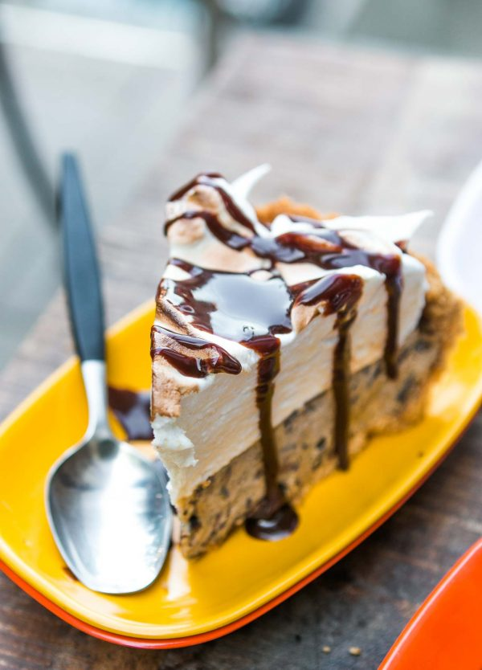

S'more Ice Cream Pie

Description
This no-bake pie has all the best elements of a s'more—plus ice cream, making it a more refreshing option for warm summer nights. A graham cracker crust lined with a thin layer of dark chocolate ganache holds a super easy no-churn espresso ice cream, topped with a cloud of marshmallow-y Swiss meringue. Toast the meringue using a blowtorch, or flambé it à la baked Alaska to bring the campfire directly to the table.
Ingredients
- 1 ½ cups finely crushed graham cracker crumbs
- ¼ cup white sugar
- 6 tablespoons butter, melted
- 1 (28 ounce) package chocolate ice cream, slightly softened
- 2 cups miniature marshmallows, or enough to cover the top
Steps
- Place graham cracker crumbs into a bowl, add sugar and melted butter, and mix until well combined. Transfer mixture into a 9-inch pie dish. Gently press graham cracker mixture into the bottom and up the sides of the pie dish using a spatula. Pat the edge and inside of the crust smooth with your fingers.
- Refrigerate crust until thoroughly chilled, at least 30 minutes.
- Fill crust with chocolate ice cream using a small ice cream scoop. Smooth the ice cream with a spatula. Place a ring of mini marshmallows around the inside of the crust and cover top of ice cream with remaining marshmallows. Gently press marshmallows into the ice cream.
- Freeze until very firm, at least 2 hours.
- Use a propane blow torch to toast the marshmallows, moving the torch quickly to brown the marshmallows. Marshmallows should have small charred spots. Return to freezer to chill the marshmallow topping, at least 3 hours; slice and serve.